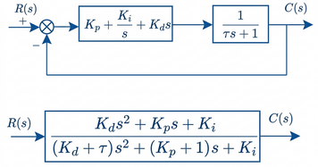
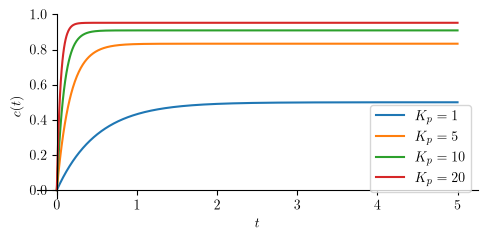
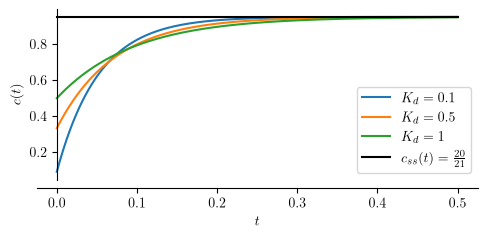
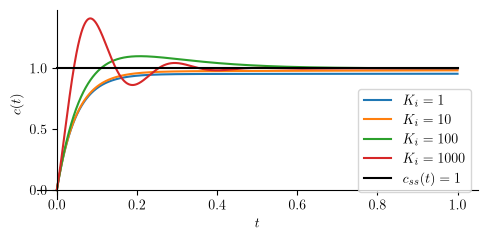
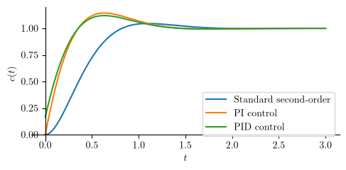

PID Control of a First Order System#
Preparations#
Here we import all necessary libraries.
These are some variables that we are going to use:
\(t, s, \tau, \omega, \omega_n, \zeta\)
from sympy.physics.control.lti import TransferFunction
Kp, Ki, Kd = symbols('K_p K_i K_d', positive=True)
t = symbols('t', positive=True)
s = symbols('s', complex=True)
tau = symbols('tau', positive=True)
omega = symbols("omega", positive=True)
omega_n = symbols('omega_n', positive=True)
zeta = symbols('zeta', positive=True)
Let us define some helper functions.
def laplace(f):
F = laplace_transform(f, t, s, noconds=True)
return F
def ilaplace(F):
f = inverse_laplace_transform(F, s, t)
return f
def frac_to_tf(frac):
return TransferFunction(fraction(frac)[0], fraction(frac)[1], s)
System and the control equations#

The diagram above corresponds to a unity-feedback loop with
and plant
Thus, the closed-loop transfer function is
H = 1 / (tau*s+1)
G = Kp + Ki/s + Kd*s # PID-control
Q = factor(((G*H / (1 + G*H))))
print("first-order system:")
mprint("H(s)=", latex(H))
print("PID-control:")
mprint("G(s)= ", latex(G))
print("the resulting closed-loop system:")
mprint("Q(s)=", latex(Q))
first-order system:
PID-control:
the resulting closed-loop system:
First order system with P-control#
Closed-loop transfer function:
Qp = simplify(Q.subs(([Kd, 0],
[Ki, 0])))
mprint(latex(Qp))
The controlled system remains a first order system. \(K_p\) changes the pole location. New pole location:
Closed-loop poles and zeros#
f = frac_to_tf(Qp)
zerosp = f.zeros()
polesp = f.poles()
print("closed-loop zeros:")
mprint(latex(zerosp))
print("closed-loop poles:")
mprint(latex(polesp))
closed-loop zeros:
closed-loop poles:
Step response#
Let us define some numerical values for our simulations.
tau_ = 1
Kp_ = [1, 5, 10, 20]
We simply perform an inverse Laplace operation to \(C(s)\) and obtain \(c(t)\) as the result. Additionally, we will also compute the steady state-value for the output (\(c_{ss}\)).
cp = ilaplace(Qp * 1/s)
cssp = simplify(limit(cp, t, 'oo'))
c0p = limit(cp, t, 0)
mprintb("c(t) = ", latex(cp))
mprintb("c_{ss} = ", latex(cssp))

First-order system with PD-control#
Closed-loop transfer function:
Qpd = simplify(Q.subs(Ki, 0))
mprint(latex(Qpd))
Closed-loop poles and zeros#
f = frac_to_tf(Qpd)
zerospd = f.zeros()
polespd = f.poles()
print("closed-loop zeros:")
mprint(latex(zerospd))
print("closed-loop zeros:")
mprint(latex(polespd))
closed-loop zeros:
closed-loop zeros:
Step response#
We simply perform an inverse Laplace operation to \(C(s)\) and obtain \(c(t)\) as the result. Additionally, we will also compute the steady state-value for the output (\(c_{ss}\)).
A phenomenon that can be observed in a derivative control is the “kick” that happens when a step input is applied to the controlled system. Because of the kick, system output does not start from zero.
cpd = logcombine(ilaplace(Qpd * 1/s))
csspd = limit(cpd, t, 'oo')
c0pd = limit(cpd, t, 0)
mprintb("c(t) = ", latex(cpd))
mprintb("c_{ss} = ", latex(csspd))
mprintb("c(0) = ", latex(c0pd))
Next, we set up arbitrary numerical values to some parameters and run sumulate the controlled system.
tau_ = 1
Kp_ = 20
Kd_ = [0.1, 0.5, 1]

First-order system with PI-control#
Closed-loop transfer function:
Qpi = simplify(Q.subs(Kd, 0))
mprintb(latex(Qpi))
Closed-loop poles and zeros#
f = frac_to_tf(Qpi)
zerospi = f.zeros()
polespi = f.poles()
print("closed-loop zeros:")
mprint(latex(zerospi))
print("closed-loop zeros:")
mprint(latex(polespi))
closed-loop zeros:
closed-loop zeros:
Step response#
We simply perform an inverse Laplace operation to \(C(s)\) and obtain \(c(t)\) as the result. Additionally, we will also compute the steady state-value for the output (\(c_{ss}\)).
cpi = ilaplace(Qpi * 1/s)
cpi = sum([simplify(cpi.args[j]) for j in range(len(cpi.args))])
csspi = limit(cpi, t, 'oo')
mprintb("c(t) = ", latex(cpi))
mprintb("c_{ss} = ", latex(csspi))
Next, we set up arbitrary numerical values to some parameters and run sumulate the controlled system.
tau_ = 1
Kp_ = 20
Ki_ = [1, 10, 100, 1000]
Kd_ = 0

First-order system with PID-control#
Closed-loop poles and zeros#
f = frac_to_tf(Q)
zerospid = f.zeros()
polespid = f.poles()
print("Closed-loop zeros:")
mprint(latex(zerospid))
print("Closed-loop poles:")
mprint(latex(polespid))
Closed-loop zeros:
Closed-loop poles:
Step response#
cpid = logcombine(ilaplace(Q * 1/s))
csspid = simplify(limit(cpid, t, 'oo'))
c0pid = limit(cpid, t, 0)
mprintb("c(t) = ", latex(cpid))
mprintb("c_{ss} = ", latex(csspid))
mprintb("c(0) = ", latex(c0pid))
Compact Engineering Form#
Unfortunately, there is no consistently clean automatic SymPy path from a messy ilaplace() result to the compact engineering form
Therefore, instead of forcing SymPy to rearrange the expression automatically, we will start from the complete solution for PID control of a first-order system and decompose it manually into three parts:
where \(c_1(t)\) is the DC component, \(c_2(t)\) is the sinusoidal component, and \(c_3(t)\) is the exponential decay envelope.
A0 = Kd + tau
B0 = Kp + 1
C0 = Ki
D = 4*A0*C0 - B0**2
sigma = B0/(2*A0)
omega_d = sqrt(D)/(2*A0)
A = -tau/A0
B = (tau*B0 - 2*A0)/(A0*sqrt(D))
cpid_compact = 1 + exp(-sigma*t)*(A*cos(omega_d*t) + B*sin(omega_d*t))
mprint(r"\sigma = ", latex(sigma))
mprint(r"\omega_d = ", latex(omega_d))
mprint(r"A = ", latex(A))
mprint(r"B = ", latex(B))
mprintb("c(t) = ", latex(cpid_compact))
check = simplify(cpid - cpid_compact)
print("check = ", check)
check = 0
c_lst = Add.make_args(cpid_compact) # separate cn
c1 = c_lst[0]
c2 = numer(c_lst[1])
c3 = 1 / denom(c_lst[1])
mprintb('c_{1}(t)=', latex(c1))
mprintb('c_{2}(t)=', latex(c2))
mprintb('c_{3}(t)=', latex(c3))
Deriving a tuning formula#
Previously, we found that PID control of a first-order system results in the closed-loop transfer function
We will now derive a simple tuning formula by choosing the desired closed-loop poles. For a second-order system, these poles can be specified using the damping ratio \(\zeta\) and the natural frequency \(\omega_n\).
mprint("Q(s)=",latex(Q))
num, denom = Q.as_numer_denom()
print("\n--- characteristic equation ---")
mprint(latex(Eq(denom, 0)))
char_pid = collect(denom, [s, s**2])
char_pid = char_pid / char_pid.coeff(s,2)
char_pid = collect(expand(char_pid), s, together)
mprintb(latex(Eq(char_pid, 0)))
--- characteristic equation ---
# Characteristic equation of the closed-loop system
char_desired = s**2 + 2*zeta*omega_n*s + omega_n**2
print("--- PID-contolled characteristic equation ---")
mprint(latex(char_pid))
print("\n--- Desired characteristic equation ---")
mprint(latex(char_desired))
--- PID-contolled characteristic equation ---
--- Desired characteristic equation ---
Comparing and matching the coefficients, we obtain:
eq1 = Eq(char_pid.coeff(s, 0), char_desired.coeff(s, 0))
mprint(latex(eq1))
eq2 = Eq(char_pid.coeff(s, 1), char_desired.coeff(s, 1))
mprint(latex(eq2))
We can now solve these equations for \(K_p\) and \(K_i\). Note that we have two equations but three controller gains. Therefore, \(K_d\) must still be selected separately.
sol_pid = solve([eq1, eq2], (Kp, Ki))
mprintb("K_p = ", latex(factor(sol_pid[Kp])))
mprintb("K_i = ", latex(factor(sol_pid[Ki])))
The tuning formula for PID control is thus
These formulas place the closed-loop poles at the desired locations. We should also check that the resulting controller gains are appropriate for our system.
Tuning a PI controller#
If we do not need the derivative action, simply let \(K_d=0\). We then obtain a PI controller with only two gains to determine.
sol_pi = {key: simplify(value.subs(Kd, 0)) for key, value in sol_pid.items()}
mprintb("K_p = ", latex(sol_pi[Kp]))
mprintb("K_i = ", latex(sol_pi[Ki]))
Numerical example#
Let us assume that \(\tau=1\). We would like to have a damping ratio \(\zeta=0.7\) and a natural frequency \(\omega_n=4\) rad/s.
First, we calculate the gains for PI control (\(K_d=0\)). Then, for comparison, we choose \(K_d=0.2\) and calculate the remaining gains for PID control.
tau_design = 1
zeta_design = Rational(7, 10)
omega_n_design = 4
Kd_design = Rational(1, 5)
settings = {tau: tau_design, zeta: zeta_design, omega_n: omega_n_design}
Kp_pi = sol_pi[Kp].subs(settings)
Ki_pi = sol_pi[Ki].subs(settings)
Kp_pid = sol_pid[Kp].subs(settings).subs(Kd, Kd_design)
Ki_pid = sol_pid[Ki].subs(settings).subs(Kd, Kd_design)
print("PI controller:")
mprintb("K_p = ", latex(Kp_pi))
mprintb("K_i = ", latex(Ki_pi))
print("PID controller:")
mprintb("K_p = ", latex(Kp_pid))
mprintb("K_i = ", latex(Ki_pid))
mprintb("K_d = ", latex(Kd_design))
PI controller:
PID controller:
Closed-loop poles and step response#
Let us verify the closed-loop poles, and then compare the step responses of the two controllers. Both controllers are designed for the same \(\zeta\) and \(\omega_n\).
Q_pi_tuned = factor(Q.subs({tau: tau_design, Kp: Kp_pi, Ki: Ki_pi, Kd: 0}))
Q_pid_tuned = factor(Q.subs({tau: tau_design, Kp: Kp_pid, Ki: Ki_pid, Kd: Kd_design}))
print("PI closed-loop poles:")
mprint(latex(frac_to_tf(Q_pi_tuned).poles()))
print("PID closed-loop poles:")
mprint(latex(frac_to_tf(Q_pid_tuned).poles()))
PI closed-loop poles:
PID closed-loop poles:
We will also plot the step response of the standard second-order system with the same characteristic equation. This provides a useful reference for comparison.

We can see that matching the poles does not necessarily give the same step response. Although the characteristic equations are identical, the closed-loop transfer functions have different zeros.
In particular, the ideal PID controller also produces an initial jump in the output when the reference is a step. Let us check the initial values.
mprintb("c_{PI}(0) = ", latex(limit(c_pi_tuned, t, 0, dir='+')))
mprintb("c_{PID}(0) = ", latex(limit(c_pid_tuned, t, 0, dir='+')))
mprintb(r"c_{PI}(\infty) = ", latex(limit(c_pi_tuned, t, oo)))
mprintb(r"c_{PID}(\infty) = ", latex(limit(c_pid_tuned, t, oo)))
Thus, pole placement is a convenient way to calculate the controller gains, but we must still check the actual closed-loop response. In practice, derivative action is usually filtered, or applied to the measured output rather than directly to a step in the reference.
Summary#
Initial and steady-state output for unit-step input#
\(c_{ss}\) |
\(c(0)\) |
|
|---|---|---|
\(\mathtt{\text{P}}\) |
\(\frac{K_{p}}{K_{p} + 1}\) |
\(0\) |
\(\mathtt{\text{PD}}\) |
\(\frac{K_{p}}{K_{p} + 1}\) |
\(\frac{K_{d}}{K_{d} + \tau}\) |
\(\mathtt{\text{PI}}\) |
\(1\) |
\(0\) |
\(\mathtt{\text{PID}}\) |
\(1\) |
\(\frac{K_{d}}{K_{d} + \tau}\) |
Zeros and poles#
Zeros |
Poles |
|
|---|---|---|
\(\mathtt{\text{P}}\) |
\(\left[ \right]\) |
\(\left[ - \frac{K_{p} + 1}{\tau}\right]\) |
\(\mathtt{\text{PD}}\) |
\(\left[ - \frac{K_{p}}{K_{d}}\right]\) |
\(\left[ - \frac{K_{p} + 1}{K_{d} + \tau}\right]\) |
\(\mathtt{\text{PI}}\) |
\(\left[ - \frac{K_{i}}{K_{p}}\right]\) |
\(\left[ - \frac{K_{p} + 1}{2 \tau} - \frac{\sqrt{- 4 K_{i} \tau + K_{p}^{2} + 2 K_{p} + 1}}{2 \tau}, \ - \frac{K_{p} + 1}{2 \tau} + \frac{\sqrt{- 4 K_{i} \tau + K_{p}^{2} + 2 K_{p} + 1}}{2 \tau}\right]\) |
\(\mathtt{\text{PID}}\) |
\(\left[ - \frac{K_{p}}{2 K_{d}} - \frac{\sqrt{- 4 K_{d} K_{i} + K_{p}^{2}}}{2 K_{d}}, \ - \frac{K_{p}}{2 K_{d}} + \frac{\sqrt{- 4 K_{d} K_{i} + K_{p}^{2}}}{2 K_{d}}\right]\) |
\(\left[ - \frac{K_{p} + 1}{2 \left(K_{d} + \tau\right)} - \frac{\sqrt{- 4 K_{d} K_{i} - 4 K_{i} \tau + K_{p}^{2} + 2 K_{p} + 1}}{2 \left(K_{d} + \tau\right)}, \ - \frac{K_{p} + 1}{2 \left(K_{d} + \tau\right)} + \frac{\sqrt{- 4 K_{d} K_{i} - 4 K_{i} \tau + K_{p}^{2} + 2 K_{p} + 1}}{2 \left(K_{d} + \tau\right)}\right]\) |
Resulting second order system#
--- or ---